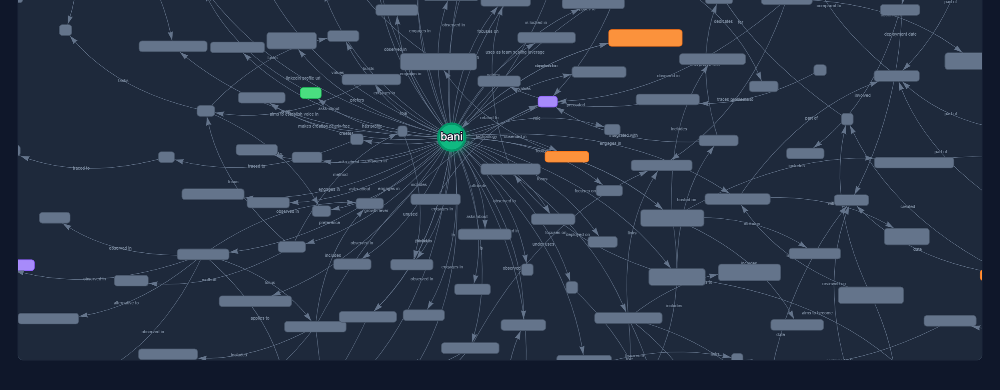

Cognitive Sidecar
Your AI assistant's long-term memory is a portable, self-hosted system that maps to human cognitive architecture.
Ever close 47 browser tabs at the end of a sprint and feel your brain reset to factory settings? I built a cognitive sidecar: a self-hosted, portable memory service that rides alongside my AI assistant, remembering what my tools forget.
I built this for myself. Turns out the problems it solves are universal.
Why Developer Tools Only Give You Working Memory
Your IDE, terminal, and chat windows are designed to forget. Every session starts from zero. The architecture decision from three weeks ago? Gone. The debugging insight that saved six hours? Not indexed anywhere. I call this context amnesia, and every developer lives with it.
Then there's the Monday reset. Every week, you reconstruct context from Teams/Slack threads, old PRs, and half-remembered conversations. I think it's a structural problem: your tools have no long-term memory.
And even when context is captured in wikis, internal docs, team notes ; it's locked to that system. Reorgs happen, tools get swapped, teams restructure. The context you built doesn't follow you. Your skills travel; your context doesn't.
Five Types of Memory, One System
There are distinct memory systems in the human brain : cognitive science has mapped them pretty well. Most developer tools only tap into one. So I built something that covers all five.
Working Memory is your IDE, terminal, and chat window. It's ephemeral by design and that's fine. This is your scratchpad, the "what am I doing right now?" layer.
Semantic Memory stores facts, preferences, and patterns searchable by meaning, not just keywords. "I prefer identity-based auth over shared keys" lives here.
Episodic Memory records dated events and decisions the "when and why" of your engineering history. "On March 4, I shipped the Neo4j sidecar with a reverse proxy."
Procedural Memory captures how-to workflows
and runbooks the muscle memory of your craft. "To deploy: run
az containerapp update with these flags."
Reflective Memory is the meta-layer: behavioral patterns you didn't even know you had. "I'm a root-cause hunter, I trace problems to protocol level before attempting fixes."
Three Layers, One Sidecar
The system is simple: three components, each with a clear job, connected through standard APIs. The orchestration layer is mem0, an open-source memory framework. Storage is Postgres with pgvector for embeddings and Neo4j for the knowledge graph. All self-hosted.
Semantic Memory
The first layer stores text memories as vector embeddings in Postgres + pgvector. Search by meaning: "what do I know about identity-based auth?" finds related memories across projects. mem0 handles the orchestration, ingestion, deduplication, and retrieval. Currently I have 148 curated memories.
Knowledge Graph
The second layer extracts entities and relationships automatically. "Banibrata → designed → sidecar architecture → for → Neo4j" : built by an LLM reading memories, not by manual entry. Currently: 779 nodes and 686 edges.

Configuration Layer
The third layer is structured files the AI reads every session : project metadata, task tracking, governance rules. This is where the system's personality and quality bar live.
Why "sidecar"? In container architecture, a sidecar is a companion process that handles cross-cutting concerns alongside your main application. This memory service does the same, but for the engineer, not the container.
The Portability Constraint
Every memory passes one test: "Would this still be useful in a
completely different tech stack?" No vendor-specific IDs. No
platform-coupled schemas. Switch embedding providers by
re-embedding. Move clouds by running
docker-compose up. Export everything as one ZIP file.
Good systems don't create lock-in, for anyone.
Patterns You Didn't Know You Had
After 26 coding sessions, the system analyzed cross-session patterns and surfaced 12 personality insights. Not compliments : behavioral observations backed by evidence. Here are five of them:
- Root-Cause Hunter : traces problems to protocol level before attempting fixes. Evidence: spent hours tracing an MCP handshake failure to an ASGI mount issue instead of just retrying.
- Builder Over Buyer : prefers creating infrastructure over off-the-shelf tools. Evidence: built a custom admin dashboard, a reverse proxy, and a Neo4j sidecar instead of using managed services.
- Systems Architect by Instinct : decomposes every problem into layers before writing a line of code. Evidence: designed a three-layer memory taxonomy before implementing anything.
- Deep-Focus Builder : best infrastructure work happens in extended uninterrupted sessions. Evidence: 46-turn coding session, multi-day architecture sprint.
- Security-Conscious by Default: first question for any new service: "who can access this?" Evidence: added RBAC, identity-based auth, and access restrictions to a personal project.
The quality bar is simple: observed across two or more sessions, phrased as behavior not flattery, backed by evidence, and free of org-specific details. Not buzzwords, actual STAR stories with a paper trail.
What I'd Tell You Before Building One
Don't auto-store everything. My first version dumped every conversation into memory. Within a week: 90% noise. Now, the AI suggests memories at natural breakpoints, and I approve or reject. Explicit control over what enters the sidecar made all the difference.
Scope everything. Memories without context are useless six months later. Every entry gets a scope tag: is this about me, my current project, a procedure, or a career insight? The tag determines how it's stored and when it's surfaced.
Own your data. If your memory system is tied to a vendor or a single platform, it's not really yours. The entire export is one ZIP file : text memories, graph structure, config. Vectors regenerate on import.
Beyond the Sidecar
This started as a weekend project. It's turning into something bigger. A few threads I'm pulling on:
- Formalizing the cognitive memory taxonomy for AI systems
- Cross-session behavioral insight extraction with validation
- Multi-user studies: does explicit curation scale?
- Integration with team-level knowledge management
A more formal writeup is in the works. Watch this space.
Whether you're building AI-augmented developer tools, thinking about persistent memory for your team, or just tired of losing context every Monday; I'd like to hear from you. And yes, you have full control: every memory is visible, editable, and deletable. Nothing enters the system without your explicit approval.
Built with purpose, not with frameworks.